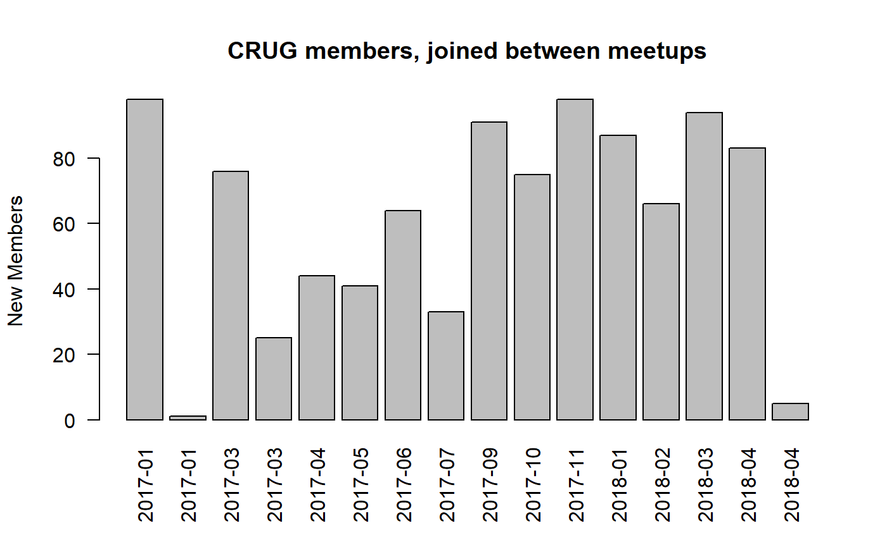

New Meetup Members
Justin M. Shea
April 17, 2018
new-members.RmdQuestion: How many joined since January of 2017?
Load the member list data.
data(member_list)Lets plot it!
plot(y = member_list$Count.Index, x = member_list$Joined.Group.on, type = "l", col = "blue",
main = "Cumulative CRUG members",
ylab = "Members", xlab = "")
How many members since January 2017?
members_2017_present <- subset(member_list, Joined.Group.on > "2017-01-01")
max(members_2017_present$Count.Index) - min(members_2017_present$Count.Index)## [1] 961Question: How many joined since the last meetup?
First, get a unique ordered list of Meetup dates
Meetup_dates <- sort(unique(member_list$Last.Attended))How many new member since last meetup?
new_members <- subset(member_list, Joined.Group.on > Meetup_dates[NROW(Meetup_dates)])
NROW(new_members)## [1] 6How about the number of new members between last meetup and the one prior to that?
new_members2 <- subset(member_list, Joined.Group.on <= Meetup_dates[NROW(Meetup_dates)] &
Joined.Group.on > Meetup_dates[NROW(Meetup_dates)-1])
# how many?
NROW(new_members2)## [1] 84How about iterating over this process over all CRUG meetups?
## First, get a unique ordered list of Meetup dates
Meetup_dates <- c(sort(unique(member_list$Last.Attended)), Sys.Date())
# initialize data.frame to save memory
new_df <- data.frame("Date"=NULL, "Count.Index"=NULL)
# start the for loop
for(i in 1:NROW(Meetup_dates)-1) {
df <- subset(member_list, Joined.Group.on <= Meetup_dates[NROW(Meetup_dates)-(i-1)] &
Joined.Group.on > Meetup_dates[NROW(Meetup_dates)-(i)])
Date <- Meetup_dates[NROW(Meetup_dates)-(i-1)]
New <- max(df$Count.Index) - min(df$Count.Index)
new_df <- rbind(new_df,data.frame(Date, New))
}That works, so lets turn it into a function for future use.
new_mem_counter <- function(data) {
Meetup_dates <- c(sort(unique(data$Last.Attended)), Sys.Date()-1)
data <- data[,c("Joined.Group.on", "Count.Index")]
#initialize data.frame
new_df <- data.frame("Date"=Meetup_dates[1], "New"=0)
for(i in (NROW(Meetup_dates)-1):1) {
df <- subset(data, data$Joined.Group.on <= Meetup_dates[NROW(Meetup_dates)-(i-1)] &
data$Joined.Group.on > Meetup_dates[NROW(Meetup_dates)-(i)])
Date <- Meetup_dates[NROW(Meetup_dates)-(i-1)]
New <- max(df$Count.Index) - min(df$Count.Index)
new_df <- rbind(new_df,data.frame(Date, New))
}
return(new_df)
}
new_members <- new_mem_counter(member_list)
new_members## Date New
## 1 2010-05-27 0
## 2 2010-08-26 20
## 3 2010-10-20 10
## 4 2010-12-16 15
## 5 2011-03-23 34
## 6 2011-06-02 17
## 7 2011-09-08 25
## 8 2011-11-17 23
## 9 2012-01-26 30
## 10 2012-04-05 60
## 11 2012-05-30 57
## 12 2012-06-18 13
## 13 2012-08-15 48
## 14 2012-10-03 55
## 15 2012-11-14 52
## 16 2013-02-07 74
## 17 2013-05-01 69
## 18 2013-05-30 32
## 19 2013-05-31 0
## 20 2013-08-08 63
## 21 2013-09-11 64
## 22 2013-11-14 33
## 23 2014-02-19 70
## 24 2014-04-05 39
## 25 2014-04-16 15
## 26 2014-05-14 56
## 27 2014-10-23 149
## 28 2014-11-13 33
## 29 2015-01-29 90
## 30 2015-03-12 66
## 31 2015-04-02 30
## 32 2015-07-28 123
## 33 2015-07-31 5
## 34 2015-10-21 97
## 35 2015-11-05 19
## 36 2015-12-02 35
## 37 2016-06-05 161
## 38 2016-06-12 8
## 39 2016-06-26 18
## 40 2016-06-29 8
## 41 2016-07-10 16
## 42 2016-07-24 25
## 43 2016-08-03 31
## 44 2016-09-01 39
## 45 2016-09-28 39
## 46 2016-11-10 40
## 47 2017-01-24 98
## 48 2017-01-26 1
## 49 2017-03-07 76
## 50 2017-03-16 25
## 51 2017-04-27 44
## 52 2017-05-17 41
## 53 2017-06-22 64
## 54 2017-07-15 33
## 55 2017-09-07 91
## 56 2017-10-14 75
## 57 2017-11-15 98
## 58 2018-01-27 87
## 59 2018-02-15 66
## 60 2018-03-29 94
## 61 2018-04-14 83
## 62 2018-04-17 5Lets Explore the new_members data set. Which gap between meetups had the most new members?
kable(new_members[new_members$New==max(new_members$New),])| Date | New | |
|---|---|---|
| 37 | 2016-06-05 | 161 |
Let plot the new members data.
# Create Date Range Index
Start_Date <- "2010-01-01"
End_Date <- Sys.Date()
Date_Index <- as.numeric(row.names(new_members[new_members$Date > Start_Date &
new_members$Date <= End_Date,]))
# Create x-axis labels, using year-month date format
x_labels <- format(new_members$Date[Date_Index], "%Y-%m")
# Plot
barplot(new_members$New[Date_Index], names.arg = x_labels,
main = "CRUG members, joined between meetups",
ylab = "New Members", xlab = "")
Let plot the new members data since 2017.
# Create Date Range Index
Start_Date <- "2017-01-01"
End_Date <- Sys.Date()
Date_Index <- as.numeric(row.names(new_members[new_members$Date > Start_Date &
new_members$Date <= End_Date,]))
# Create x-axis labels, using year-month date format
x_labels <- format(new_members$Date[Date_Index], "%Y-%m")
# Plot
barplot(new_members$New[Date_Index], names.arg = x_labels, las=2,
main = "CRUG members, joined between meetups",
ylab = "New Members", xlab = "")